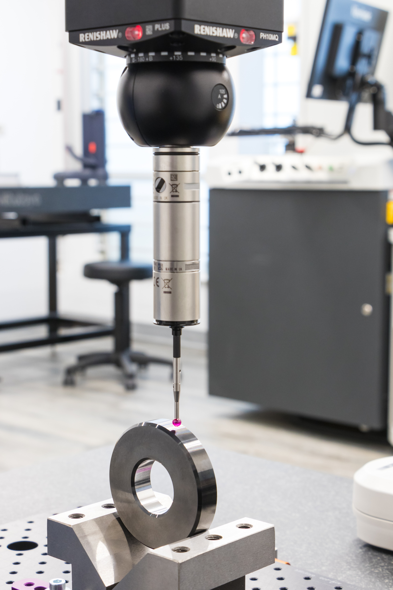
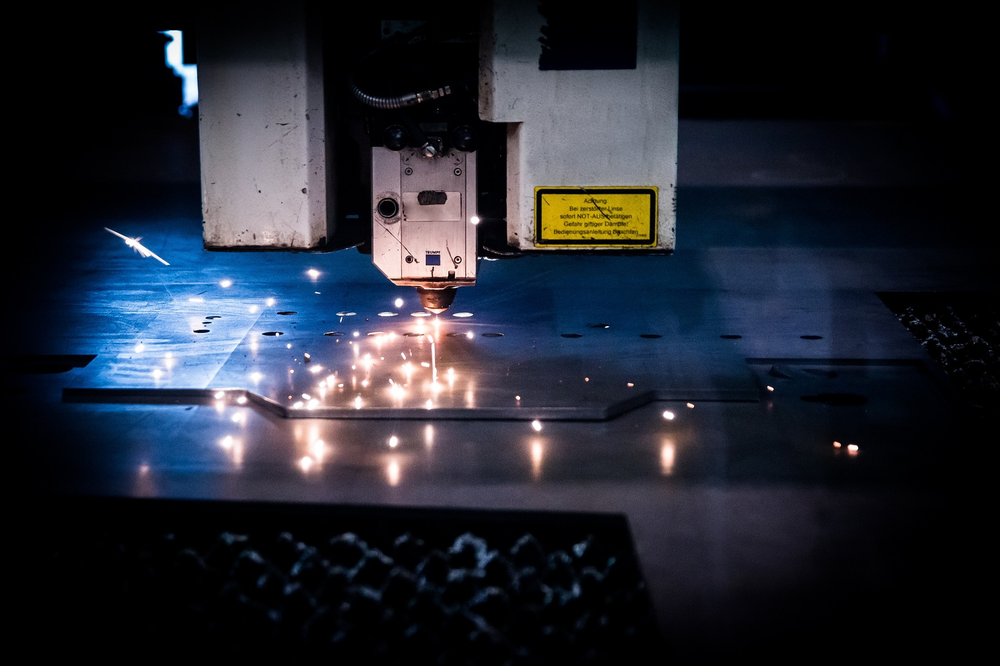
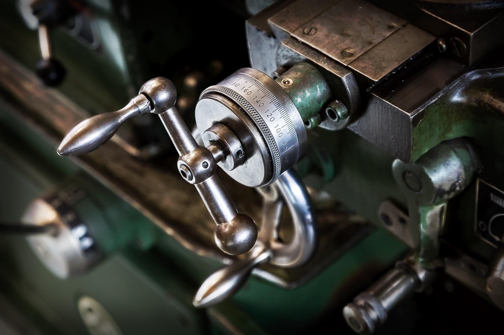
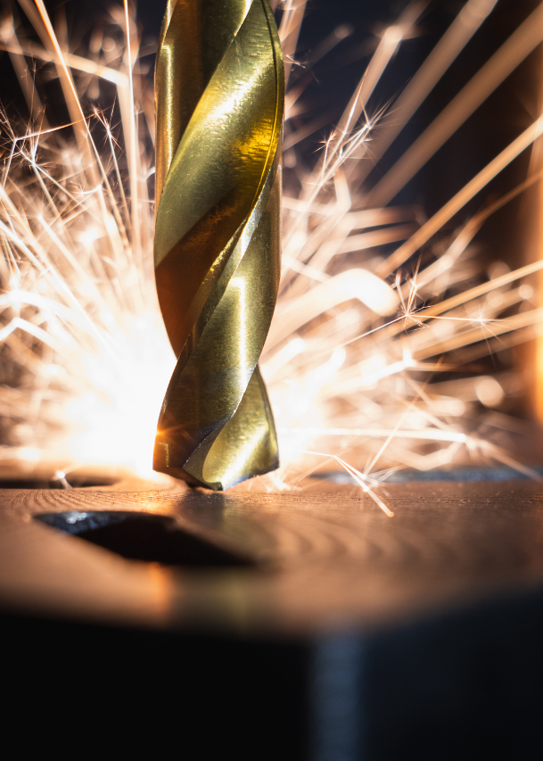

The process of using machines to modify metallic objects (and by extension other types of materials) involving swarf evacuation is called machining.
The concept behind this process is to control the removal of the resulting waste, while transforming the raw part into an object with an appropriate shape and size, using a machine tool.
With these techniques, you can shape metallic objects with a high degree of precision.
When machining a part, material removal is achieved by the conjunction of two relative movements between the workpiece and the tool:
the cutting movement (cutting speed) and the feed movement (feed rate).
There are two ways to shape these materials : in one case, the cutting edge tool shape will define the result.
In the other case, the conjunction of the cutting speed and the feed rate would be the two important factors that would matter.
Nowadays, CNC machining technologies processes are almost totally automatic.
CNC Machining
milling
Métrology
Touch probe

Science of measurement is called metrology. Studying measurements is the key when it comes to accuracy.
It's particularly true in the domain of precision engineering.
Companies voluntarily put these systems in place in order to certify conformity and validity of their production,
as metrology is tightly related to the various production processes.
It's also a way to ensure quality control for them.
Métrology
Touch probe
Sheet Metal
Laser

Sheet metal working is a branch of metallurgy when it comes to use thick sheet mill, while producing raw metal sheets is purely a mechanical process.
It consists in « manifacturing and implementation of sheet metal ».
Production of blast-furnace cast iron enables steel slab rolling, but also non ferrous metals transformation into thin sheets can be parts of this process.
In the shipbuilding industry, carpenters and sheet metal workers are both involved in the construction of the boat's hull structure (deck planking, lining, torques, strakes...) and
are also related to other important parts (bulkheads, coamings, pen boards...).
In the industry, sheet metalling uses a large number of machines, such as laser cutting machines, folding machines, guillotine shears and a few others.
Sheet metal workers, and various production technicians are needed in order to handle these machines and make sure that metal cutting and shaping work gets done appropriately.
Sheet Metal
Laser
Conventional
Vernier

Verniers are control devices used when operating machine shafts, they provide a high degree of accuracy for machine parts movements.
The term « conventional » is used in machining in industrial technologies to characterizing a process of creation of mechanical parts by material removal.
Most frequently used processes are called milling, drilling, turning, and all of these require qualified machine workers. Lots of differents raw materials can be used,
for example aluminium, stainless steel, copper, but also titanium, even plastics.
Conventional
Vernier
Tooling
Tooling Machine Accessories

C.E.D.E.M.I can provide tailored cutting or turning tools complying with your specifications.
We can also provide new or second hand tooling or accessories, matching specific needs for various different proccesses.
For example : cross tables, chucks or clamping related accessories, rotary indexing tables, boring heads,
cutter heads, turning machine chucks, turrets, quick change turrets, magnetic chucks, bezels.
We can also provide plates, slotted tables, big cubes (non exhaustive list).
Tooling
Tooling Machine Accessories
Boiler Making
metal forming
The boilermaker achieves metallic parts forming, he's able to work on ferrous or non ferrous metals, copper, brass, or light alloys like aluminium.
As a first step, he will study a drawing design and then choose the right way to produce the object, or parts of it.
Based on the drawings, he'll report various indications directly on the metal sheets.
Then he'll cut the material, and shape it accordingly, through different processes (bending, pressing, folding, rolling, levelling).
Boiler Making
metal forming
Legal Notices
https://www.cedemi.fr
Website property – Service provider
You are currently connected to the C.E.D.E.M.I website, property of the Cedemi company.
C.E.D.E.M.I - Compagnie Européenne de Distribution et Exploitation de Matériel Industriel
SAS CEDEMI with 200.000 euros of capital.
Z.I du Val de Seine
9 Avenue Marcelin Berthelot
92390 Villeneuve La Garenne
1 - Intellectual property :
The C.E.D.E.M.I website is the owner of all the related intellectual property rights.
Any reproduction, or modification of the published material on the website is forbidden, unless you have a written authorization from Cedemi to do so.
Any unauthorized exploitation of this website and its content will be considered as an act of infringement and a violation, that will be prosecuted accordingly to the L.335-2 article from the intellectual property code.
2 - Copyright :
The entire website is protected by copyright.
3 - Corporate responsibility priorities :
All available measures are taken to provide quality content on the website www.cedemi.fr.
We can't guarantee the best degree of completeness though, neither we can't certify absolute exactitude of every piece of information and/or services provided on the website.
Informations are only provided as general guidelines, and do not represent any contract terms.
They should be reliable, but we don't guarantee that would be strictly errors-free, or strictly completes.
They're not necessarily exhaustive, and are potentially to be updated through time.
C.E.D.E.M.I can't be held responsible for any mistake on that regard, or for any lack of updates, wether of its own doing or of that of partner third parties providing the informations.s,
4 - Links :
Any link to our website should be subject of a prior written approval.
We shall not be responsible for the content from other websites that would link to www.cedemi.fr.
5 - Brands :
Any other trademarks or registered trademarks contained in the current website are the property of their respective owners.
Publishing Director
29 july 1982 audiovisual law, 1st of august 2000 2000-79 law.
Miss Sandra BENAY , as president.
Hosting
1st of august 2000 law, articles from 43-8 to 43-10. Infomaniak Network SA